Quando15 NOV 2026Domingo
Inscrições abertas

Uma manhã para desafiar seus limites, reunir a família e viver a energia da corrida em Sete Lagoas.
HorárioA PARTIR DAS 7HLargada às 8h
OndeMUSEU FERROVIÁRIOPraça da Estação · Sete Lagoas, MG
Circuito Sete Lagoas
O SEU PRÓXIMO DESAFIO COMEÇA AQUI.
Na 2ª etapa, a Praça da Estação recebe corredores, caminhantes e famílias para uma experiência feita para todos os ritmos.
Escolha a sua distância, prepare seu melhor e venha escrever mais um capítulo desta corrida.
Escolha sua prova
UMA ETAPA. QUATRO JEITOS DE PARTICIPAR.
11,280 KM
Corrida
5,740 KM
Corrida
2 KM
Caminhada da família
KIDS
Distância livre · nascidos de 2011 a 2020
15 de novembro
RITMO DE PROVA
Chegue com antecedência e aproveite toda a programação da arena.
- Abertura da arena
- Aquecimento
- Largada das corridas 11,280 km e 5,740 km
- Largada da caminhada da família · 2 km
- Largada corrida kids · 300 m
- Início da premiação
Premiação
MEDALHA PARA QUEM VAI ATÉ O FIM.
Todos os participantes que concluírem corretamente suas provas recebem medalha de participação.
Nas corridas de 11,280 km e 5,740 km, os três primeiros colocados geral feminino e masculino recebem troféu. Também há premiação do 1º ao 3º lugar por faixa etária, no feminino e masculino.
Faixas etárias: 18–25, 25–35, 35–45 e 45–55 anos. A caminhada e a corrida kids têm caráter participativo.Informações importantes
TUDO CERTO PARA A LARGADA.
INSCRIÇÕES
1º lote: R$ 99 até 15/10
2º lote: R$ 119 até 30/10
3º lote: R$ 139 até 15/11 ou enquanto houver vagas.
RETIRADA DO KIT
Mart Minas · R. Afonso Carlos Capanema, 501, Santo Antônio.
Sexta, 13/11, 9h–20h
Sábado, 14/11, 9h–14h
LOCAL DA PROVA
Museu Ferroviário
Avenida Norte Sul, Centro
Sete Lagoas, MG